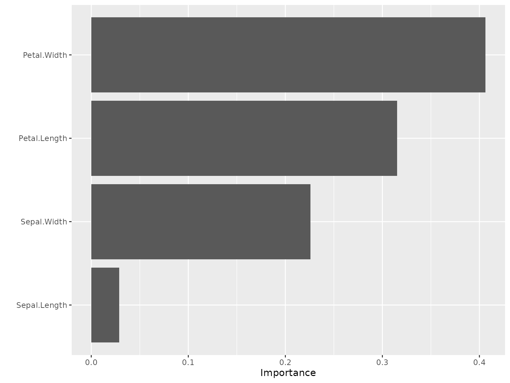

Introduction
kindling bridges the gap between torch and tidymodels, providing a streamlined interface for building, training, and tuning deep learning models. This vignette will guide you through the basic usage.
Installation
You can install kindling on CRAN:
install.packages('kindling')Or install the development version from GitHub:
# install.packages("pak")
pak::pak("joshuamarie/kindling")
## devtools::install_github("joshuamarie/kindling") Before using {kindling}
Before starting, you need to install LibTorch first, the backend of PyTorch, which is also the backend of torch R package:
torch::install_torch()Main Features
Current kindling supports the following:
Code generation of torch expression
-
Multiple architectures available
- Base models interface: feedforward networks (MLP/DNN/FFNN) and recurrent variants (RNN, LSTM, GRU)
- Generalized neural network trainer that has the same topology as MLPs
Native support for R ML workflows and pipelines (currently tidymodels; mlr3 planned)
Fine-grained control over network depth, layer sizes, and activation functions
GPU acceleration support via torch tensors
What it doesn’t support
As of kindling >0.3.0, it supports most of NN architectures thanks to its versatility, as long as they follow typical MLP’s topology. This package, however, does not support the following:
- Residual Networks (ResNet)
- Automatic Integration (AutoInt)
- Self-Attention and Inter-sample Attention Transformer (Saint)
To use all of these, you might want to take an interest towards brulee package instead. The said NN architectures above are available on version 1.0.0 (and later) release.
Usage: Three Levels of Interaction
kindling is powered by R’s metaprogramming
capabilities through code generation. Generated
torch::nn_module() expressions power the training
functions, which in turn serve as engines for tidymodels
integration. This architecture gives you flexibility to work at whatever
abstraction level suits your task.
Level 1: Code Generation for torch::nn_module
At the lowest level, you can generate raw
torch::nn_module code for maximum customization. Functions
ending with _generator return unevaluated expressions you
can inspect, modify, or execute.
Here’s how to generate a feedforward network specification:
ffnn_generator(
nn_name = "MyFFNN",
hd_neurons = c(64, 32, 16),
no_x = 10,
no_y = 1,
activations = 'relu'
)torch::nn_module("MyFFNN", initialize = function ()
{
self$fc1 = torch::nn_linear(10, 64, bias = TRUE)
self$fc2 = torch::nn_linear(64, 32, bias = TRUE)
self$fc3 = torch::nn_linear(32, 16, bias = TRUE)
self$out = torch::nn_linear(16, 1, bias = TRUE)
}, forward = function (x)
{
x = self$fc1(x)
x = torch::nnf_relu(x)
x = self$fc2(x)
x = torch::nnf_relu(x)
x = self$fc3(x)
x = torch::nnf_relu(x)
x = self$out(x)
x
})This creates a three-hidden-layer network (64 - 32 - 16 neurons) that takes 10 inputs and produces 1 output. Each hidden layer uses ReLU activation, while the output layer remains “untransformed”.
Level 2: Direct Training Interface
Skip the code generation and train models directly with your data. This approach handles all the torch boilerplate when training the models internally.
Let’s classify iris species:
model = ffnn(
Species ~ .,
data = iris,
hidden_neurons = c(10, 15, 7),
activations = act_funs(relu, softshrink[lambd = 0.5], elu),
loss = "cross_entropy",
epochs = 100
)
model
======================= Feedforward Neural Networks (MLP) ======================
-- FFNN Model Summary ----------------------------------------------------------
-----------------------------------------------------------------------
NN Model Type : FFNN n_predictors : 4
Number of Epochs : 100 n_response : 3
Hidden Layer Units : 10, 15, 7 reg. : None
Number of Hidden Layers : 3 Device : cpu
Pred. Type : classification :
-----------------------------------------------------------------------
-- Activation function ---------------------------------------------------------
-------------------------------------------------
1st Layer {10} : relu
2nd Layer {15} : softshrink(lambd = 0.5)
3rd Layer {7} : elu
Output Activation : No act function applied
-------------------------------------------------For parametric activation functions like softshrink, which contains
"lambd"(\lambda) as its parameter (the default is 1), use indexed syntax (available on v0.3.x+) e.g.softshrink[lambd = 0.5]orsoftshrink[0.5], or a string literal expression e.g."softshrink(lambd = 0.5)", to transmute the parameter value. See?kindling::act_funs()for more details.
Evaluate the prediction through predict(). The
predict() method is extended for fitted models through its
newdata argument.
Two kinds of predict() usage:
-
Without
newdatapredictions default to the training data. -
With
newdatasimply pass the new data frame as the new reference.sample_iris = dplyr::slice_sample(iris, n = 10, by = Species) predict(model, newdata = sample_iris) |> (\(x) table(actual = sample_iris$Species, predicted = x))() #> predicted #> actual setosa versicolor virginica #> setosa 10 0 0 #> versicolor 0 9 1 #> virginica 0 1 9
Level 3: Conventional tidymodels Integration
Work with neural networks just like any other parsnip model. This unlocks the entire tidymodels toolkit for preprocessing, cross-validation, and model evaluation.
# library(kindling)
# library(parsnip)
# library(yardstick)
box::use(
kindling[mlp_kindling, rnn_kindling, act_funs, args],
parsnip[fit, augment],
yardstick[metrics]
)
data(Ionosphere, package = "mlbench")
ionosphere_data = Ionosphere[, -2]
# Train a feedforward network with parsnip
mlp_kindling(
mode = "classification",
hidden_neurons = c(128, 64),
activations = act_funs(relu, softshrink[lambd = 0.5]),
epochs = 100
) |>
fit(Class ~ ., data = ionosphere_data) |>
augment(new_data = ionosphere_data) |>
metrics(truth = Class, estimate = .pred_class)#> # A tibble: 2 × 3
#> .metric .estimator .estimate
#> <chr> <chr> <dbl>
#> 1 accuracy binary 0.991
#> 2 kap binary 0.981
# Or try a recurrent architecture (demonstrative example with tabular data)
rnn_kindling(
mode = "classification",
hidden_neurons = c(128, 64),
activations = act_funs(relu, elu),
epochs = 100,
rnn_type = "gru"
) |>
fit(Class ~ ., data = ionosphere_data) |>
augment(new_data = ionosphere_data) |>
metrics(truth = Class, estimate = .pred_class)#> # A tibble: 2 × 3
#> .metric .estimator .estimate
#> <chr> <chr> <dbl>
#> 1 accuracy binary 1
#> 2 kap binary 1Hyperparameter Tuning & Resampling
The package has integration with tidymodels, so it supports hyperparameter tuning via tune with searchable parameters.
The current searchable parameters under kindling:
- Layer widths (neurons per layer)
- Network depth (number of hidden layers)
- Activation function combinations
- Output activation
- Optimizer (Type of optimization algorithm)
- Bias (choose between the presence and the absence of the bias term)
- Validation Split Proportion
- Bidirectional (boolean; only for RNN)
The searchable parameters outside from kindling,
i.e. under dials package such as
learn_rate() also supported.
Here’s an example:
# library(tidymodels)
box::use(
kindling[
mlp_kindling, hidden_neurons, activations, output_activation, grid_depth
],
parsnip[fit, augment],
recipes[recipe],
workflows[workflow, add_recipe, add_model],
rsample[vfold_cv],
tune[tune_grid, tune, select_best, finalize_workflow],
dials[grid_random],
yardstick[accuracy, roc_auc, metric_set, metrics]
)
mlp_tune_spec = mlp_kindling(
mode = "classification",
hidden_neurons = tune(),
activations = tune(),
output_activation = tune()
)
iris_folds = vfold_cv(iris, v = 3)
nn_wf = workflow() |>
add_recipe(recipe(Species ~ ., data = iris)) |>
add_model(mlp_tune_spec)
nn_grid_depth = grid_depth(
hidden_neurons(c(32L, 128L)),
activations(c("relu", "elu")),
output_activation(c("sigmoid", "linear")),
n_hlayer = 2,
size = 10,
type = "latin_hypercube"
)
# This is supported but limited to 1 hidden layer only
## nn_grid = grid_random(
## hidden_neurons(c(32L, 128L)),
## activations(c("relu", "elu")),
## output_activation(c("sigmoid", "linear")),
## size = 10
## )
nn_tunes = tune::tune_grid(
nn_wf,
iris_folds,
grid = nn_grid_depth
)
best_nn = select_best(nn_tunes)
best_nn# A tibble: 1 × 4
hidden_neurons activations output_activation .config
<list> <list> <chr> <chr>
1 <int [2]> <chr [2]> sigmoid pre0_mod03_post0
final_nn = finalize_workflow(nn_wf, best_nn)
final_nn_model = fit(final_nn, data = iris)
final_nn_model══ Workflow [trained] ══════════════════════════════════════════════════════════
Preprocessor: Recipe
Model: mlp_kindling()
── Preprocessor ────────────────────────────────────────────────────────────────
0 Recipe Steps
── Model ───────────────────────────────────────────────────────────────────────
======================= Feedforward Neural Networks (MLP) ======================
-- FFNN Model Summary ----------------------------------------------------------
-----------------------------------------------------------------------
NN Model Type : FFNN n_predictors : 4
Number of Epochs : 100 n_response : 3
Hidden Layer Units : 41, 94 reg. : None
Number of Hidden Layers : 2 Device : cpu
Pred. Type : classification :
-----------------------------------------------------------------------
-- Activation function ---------------------------------------------------------
---------------------------------
1st Layer {41} : elu
2nd Layer {94} : relu
Output Activation : sigmoid
---------------------------------
final_nn_model |>
augment(new_data = iris) |>
metrics(truth = Species, estimate = .pred_class)# A tibble: 2 × 3
.metric .estimator .estimate
<chr> <chr> <dbl>
1 accuracy multiclass 0.667
2 kap multiclass 0.5
Resampling strategies from rsample will enable robust cross-validation workflows, orchestrated through the tune and dials APIs.
Variable Importance
kindling integrates with established variable
importance methods from {NeuralNetTools} and
vip to interpret trained neural networks. Two primary
algorithms are available:
-
Garson’s Algorithm
garson(model, bar_plot = FALSE) #> x_names y_names rel_imp #> 1 Petal.Width y 30.55608 #> 2 Sepal.Width y 26.29143 #> 3 Petal.Length y 21.70248 #> 4 Sepal.Length y 21.45001 -
Olden’s Algorithm
olden(model, bar_plot = FALSE) #> x_names y_names rel_imp #> 1 Petal.Width y 0.40620665 #> 2 Petal.Length y 0.31516329 #> 3 Sepal.Width y -0.22601396 #> 4 Sepal.Length y -0.02890521
Integration with {vip}
For users working within the tidymodels ecosystem, kindling models work seamlessly with the vip package:

Note: Weight caching increases memory usage proportional to network size. Only enable it when you plan to compute variable importance multiple times on the same model.
Learn More
- Visit the package website: https://kindling.joshuamarie.com
- Report issues: https://github.com/joshuamarie/kindling/issues